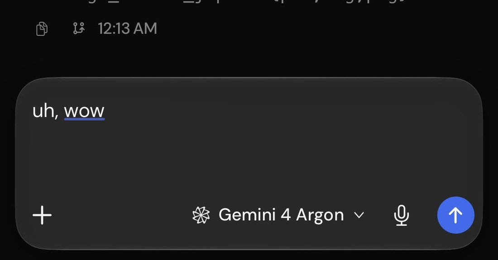

gemini 4 in droid is currently The Best model for research to be clear. it’s the only model that will act competently, ie go off, run experiments, and report back using the chat itself as a report rather than creating a myriad of *.md files. it’s a seriously good model and a seriously good harness
